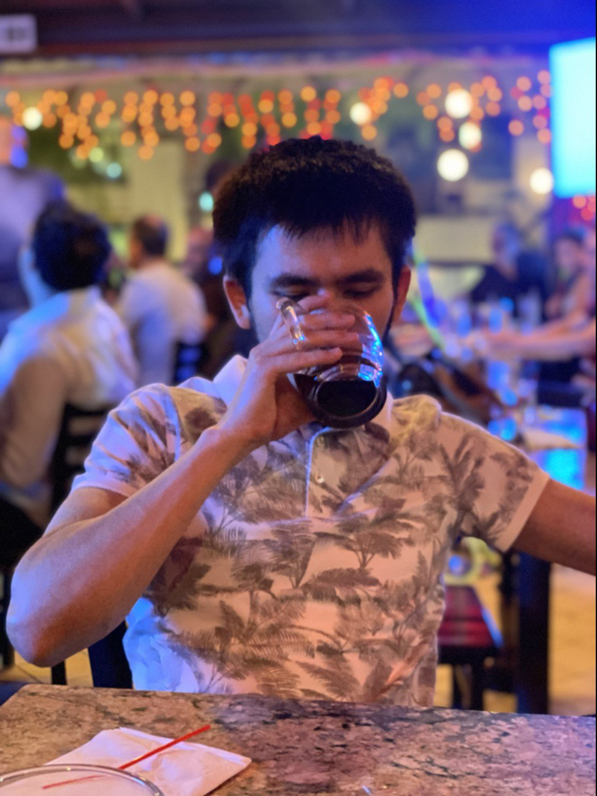

Sardorkhon Saidkhujaev

Summary
I am an ambitious Web Developer. I work smart and like to keep things simple. Simplicity is the key for satisfaction.
Education
- Bachelor of Science in Business Management
- California International University (2015-2020)
- Master of Business Administration
- International American University (2020 - 2022)
Work experience
-
March - December, 2016
- Securing the university parking from violators
- Keeping cars parked properly
-
April - October, 2020
- Answering Phone calls for shcduling court appointments
- Translating documents from Uzbek to English
- Sorting new and old case files
Skills
- Web-Development ☆☆
- Touch typing ☆☆☆
- Semi-Truck Driving ☆☆☆☆☆
- Languages:
- Arabic ☆☆
- Russian ☆☆
- English ☆☆☆☆☆
- Uzbek ☆☆☆☆☆
Other